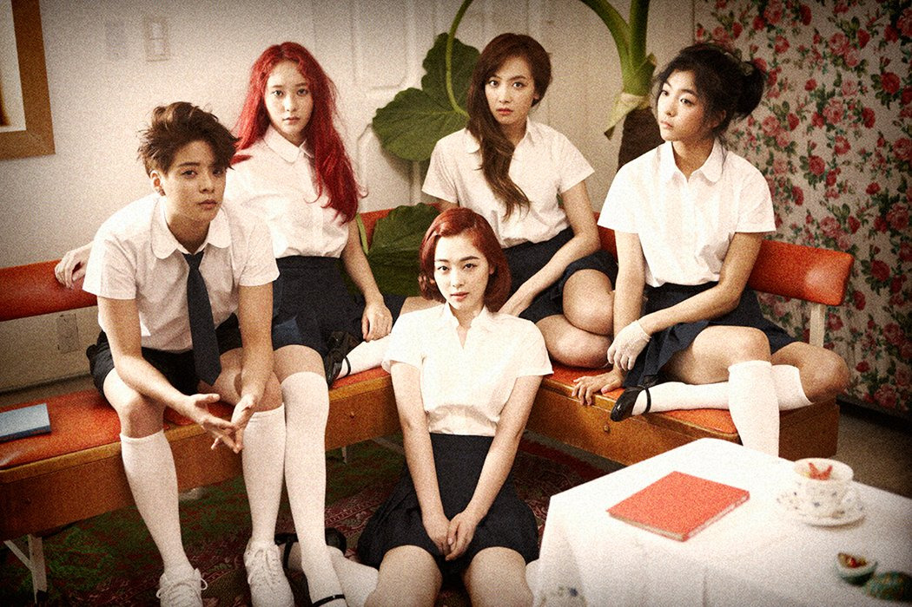
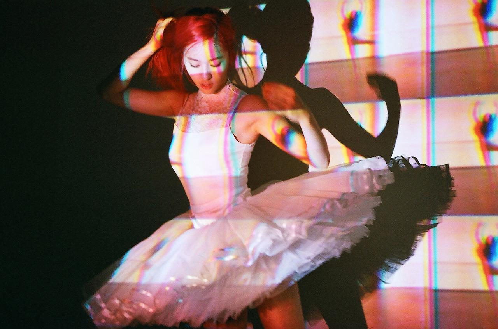
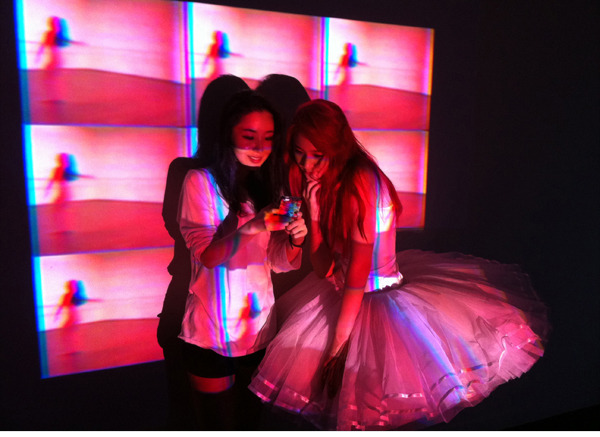

K-POP 산업에서 SM엔터테인먼트는 단연 '설계형 브랜드'에 가까운 전략을 선도해왔습니다. 그 중심에는 비주얼 디렉팅 팀이라는 내재화된 조직이 있습니다.
이 팀은 단순히 예쁜 디자인을 만드는 것이 아니라 아티스트 그룹 전체의 정체성, 서사와 세계관을 시각적으로 구현하는 조직입니다.
🎯 1. 전략: "큰 그림을 먼저 그리고, 앨범은 그 안에서 변주한다"
SM은 아티스트 그룹을 콘텐츠 단위가 아닌 하나의 브랜드로 기획합니다.
- 각 그룹마다 사전에 전체 콘셉트와 캐릭터성, 세계관의 방향성을 설정하고
- 이후 출시되는 앨범, 뮤직비디오, 굿즈, 무대, 전시까지 모두 그 큰 그림 안에서 움직이도록 설계합니다.
- 팬들은 다양한 앨범 콘셉트를 경험하면서도 언제나 "이건 NCT다", "이건 EXO다"라는 정체성 일관성을 인식합니다.
SM은 이를 통해 팬을 단순 소비자가 아닌 브랜드의 해석자이자 서사의 공동 창작자로 포지셔닝합니다. 이는 팬덤 비즈니스의 핵심 구조 중 하나인 '참여형 브랜드 전략(Participatory Branding)'의 전형적 사례입니다.
🧠 2. 실행: 비주얼 디렉팅 팀이 '보이는 모든 것'을 설계한다
SM의 비주얼 디렉팅 팀은 2000년대 중반 국내 엔터사 최초로 조직된 내부 디자인 전략팀입니다.
- 아티스트별 타깃 분석 + 시장 트렌드 조사
- 로고, 컬러, 패키지, 포토, 무대, 뮤비 등 브랜드 시각 언어 전반 기획
- 외부 아티스트(포토그래퍼, 감독 등)와의 협업 디렉팅
- SNS, 콘텐츠 커뮤니케이션까지 포함한 통합 브랜딩 설계
즉 앨범 하나, 무대 한 장면도 단순 비주얼이 아닌 브랜드 자산으로 작동하게 만듭니다.
💡 3. 사례: 콘셉트 변화 아닌 '브랜드 자산 누적'
① f(X) - 실험성을 '정체성 자산'으로 누적
에프엑스는 "아방가르드하고 실험적인 그룹"으로서 몽환적이고 독창적인 실험성을 정체성으로 설정했습니다. 강렬한 색채 대비, 독특한 아트워크, 콘셉추얼한 스타일링을 통해 타 걸그룹과 명확한 차별화를 시도하였습니다. 앨범 콘셉트와 아트필름, 뮤직비디오, 커버 디자인 등에서 일관된 톤앤매너를 유지함으로써 브랜드 자산을 축적해왔습니다.
[f(x) Pink Tape 앨범 콘셉트 이미지]
레트로 감성의 핑크색 비디오 테이프 디자인과 아방가르드한 스타일링
📼 Pink Tape (2013)
민희진 아트디렉터가 주도한 이 앨범은 80-90년대 레트로 감성을 핑크색 비디오 테이프 디자인으로 현대화했습니다.
[f(x) Pink Tape 앨범 커버]
80-90년대 레트로 감성의 핑크색 비디오 테이프 디자인
특히 아트 필름은 세련된 색채 대비와 그래픽 요소를 활용해 독특한 분위기를 만들어냈습니다.



🟧 4 Walls (2015)
4인조 체제로 전환 후, '4개의 벽'을 콘셉트로 앨범 커버, 뮤비, 퍼포먼스를 연동 설계했습니다. 멤버들의 얼굴 각도를 달의 변화처럼 배치하고, 강렬한 주황색과 푸른색 대비로 몽환적 이미지를 강조했습니다.
[f(x) 4 Walls 앨범 커버 & 뮤직비디오]
달의 변화처럼 배치된 멤버들의 얼굴과 주황-푸른색 대비의 몽환적 이미지
평론가와 음악 산업 양쪽에서의 '예술성 + 브랜드 가치' 동시 입증
- 《Pink Tape》 앨범은 "다채로움 속의 일관성"이라는 평을 받으며, 비주얼 콘셉트의 통일성이 음악적 구성력까지 강화한 사례로 평가되었습니다.
- 이 앨범은 전 세대 걸그룹 중 유일하게 '한국 대중음악 100대 명반'에 등재되었으며, 브랜드형 콘셉트 앨범으로 K-POP 걸그룹 역사상 최고의 평가를 받았습니다.
- 《4 Walls》는 일렉트로닉 사운드 기반의 몽환적 이미지와 '4개의 벽'이라는 시각적 메타포를 통일감 있게 구현하여 성숙한 음악 세계관으로 리포지셔닝에 성공했다는 평가를 받습니다.
안정적 팬덤 기반과 음반 판매 성장
- 《Pink Tape》: 초동 36,500장 기록 → 당시 f(x) 최고 초동 수치 달성
- 《4 Walls》: 초동 66,000장 → 자체 최고 기록 경신 및 팬덤 충성도 증명
② EXO – 로고를 '시각 언어 자산'으로 누적
EXO는 데뷔 당시부터 초능력 세계관과 '엑소플래닛'이라는 설정을 바탕으로 고유 로고 시스템을 구축하였습니다. 각 앨범마다 타이틀곡의 콘셉트와 메시지를 시각적으로 반영하면서도, 기본 로고 구조(EXO 알파벳 또는 육각형 프레임)를 유지하여 브랜드 일관성을 지켰습니다.
🌐 MAMA (2012)
육각형 기반의 심플한 로고로, 엑소의 세계관(외계 행성에서 온 초능력자들)을 상징합니다. 육각형은 그룹의 유닛 구조(EXO-K와 EXO-M)와 멤버 수를 시각적으로 표현했습니다.
[EXO MAMA 육각형 로고]
외계 행성 세계관을 상징하는 기하학적 육각형 디자인
🧪 중독 (Overdose) (2014)
'헤어나올 수 없는 치명적인 사랑'을 주제로, 미로 형태의 로고를 사용했습니다. 복잡한 라인과 반복된 형태로 중독성과 혼란스러움을 시각적으로 상징했습니다.
[EXO Overdose 미로 로고]
복잡한 라인과 반복된 형태로 중독성과 혼란스러움을 시각적으로 구현
🔈 Monser & Lucky One (2016)
두 가지 타이틀곡에 맞춰 각각 다른 로고를 사용했습니다.
[EXO Monster & Lucky One 로고]
Monster: 음산한 분위기의 정육각형 로고 | Lucky One: 네잎클로버를 연상시키는 긍정적 로고
③ NCT – 색상을 '브랜드 커뮤니케이션 자산'으로 누적
NCT는 127, DREAM, WayV, WISH 등 다양한 유닛이 각기 다른 콘셉트로 활동하지만, 공식 색상인 네온그린을 중심으로 하나의 브랜드 정체성을 공유합니다. 네온그린은 앨범, 굿즈, 무대, 협업 콘텐츠 등 전 채널에 반복 활용되며, 팬들에게 "이건 NCT다"라는 직관적인 인식과 소속감을 형성합니다.
특히 스타벅스와의 협업 제품인 'NCT 콘서트백'은 출시 10분 만에 온라인 전량 품절, 일부 매장에서는 긴 줄이 형성되는 등 높은 현장 반응을 기록했습니다.
[NCT x 스타벅스 협업 굿즈]
네온그린 컬러가 적용된 콘서트백 - 출시 10분 만에 전량 품절
📈 비즈니스 인사이트: 단기 캠페인이 아닌, 장기 자산 전략
① 비주얼 일관성은 브랜드 자산이 된다
- 앨범, 비디오, 콘셉트 이미지가 모두 세계관의 연장선으로 누적되며 팬은 음악 소비자가 아닌 세계관의 해석자이자 공동 창조자로 변화합니다.
- SM의 비주얼 자산은 단순한 디자인이 아니라 IP(지식재산) 관리 전략으로 접근됩니다.
- 이를 통해 굿즈, 컬래버, 전시, 앱 UI까지 확장되며 비주얼 = 수익 자산이라는 공식을 성립시킵니다.
② 브랜드 자산은 팬덤 충성도를 만든다
- 브랜드 로열티 이론에 따르면 인지적 일관성은 감정적 애착과 반복 소비를 강화합니다.
- SM은 '다양하게 보여주되 항상 같은 팀처럼 느껴지게 하는' 전략으로 정체성 일관성을 확보합니다.
- 그 결과 팬은 '해석자'로서의 역할을 넘어서 브랜드 공동체의 일원이 됩니다.
③ 팬덤 충성도는 실질 매출로 이어진다
- f(x): 실험적 콘셉트임에도 불구하고 초동 6만 장을 돌파하며 브랜드화된 정체성의 시장성을 증명했습니다.
- EXO: 로고 시스템을 통해 팬 결속력을 극대화하고, 굿즈 → 전시 → 공간 사업으로 비즈니스 확장을 이뤄냈습니다.
- NCT: 네온그린 컬러로 일관된 디자인 정체성을 확보하며, 스타벅스 협업 굿즈가 10분 만에 품절되는 기록을 세웠습니다.
조직 구조와 브랜딩 시스템의 선순환
- SM은 2023년 'SM 3.0 전략'을 통해 멀티 제작센터 체계를 도입했습니다.
- 각 제작센터는 유닛별 콘텐츠를 제작하되, 브랜드 일관성은 크리에이티브 조직이 통합 관리합니다.
- 이는 개별성-확장성-통합성을 동시에 확보한 구조적 전략의 결과입니다.
결론
이처럼 SM의 '숲을 보는 전략'은 단순히 멋진 콘텐츠를 넘어서, 팬의 인식 속에 장기적인 브랜드 자산을 남기는 설계 방식입니다.
각 앨범이 독립적인 상품이 아닌 하나의 큰 브랜드 서사의 일부로 작동할 때, 팬들은 단순한 소비자에서 브랜드의 공동 창작자로 변화하며, 이는 결국 지속 가능한 비즈니스 모델로 이어집니다.